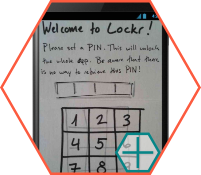

Lockr

The goal was to interview a classmate to discover a problem that could be solved with a mobile app.
My project partner had been wanting a simple place to store passwords that would reveal them without revealing the user name or the service at the same time. While there are a ton of password managers available, they are overkill for his needs. The basic idea was to be a glorified notepad that would also itself be locked.

A simple password-protected place to record usernames and passwords is insecure if someone is looking over your shoulder, so we decided to have a hold-to-reveal action instead. Allowances were also made for entering codes (locks, gates, etc) that have no associated username.

My partner had a rather robust idea of what app he wanted, and basically just had to design it. However, I was able to bring in my QA experience and create some error handling that otherwise might have been missed.
User interviews, research, and testing. Pen-and-paper sketches in low and high fidelity. POP App (web and mobile).

{kind=link}
{kind=link}
{kind=link}
There was a lot of back-and-forth conversation about the look and feel of the paper prototype before the final sketches were photographed for PopApp.
Interviews revealed other information he needed to store, such as answers to security questions. However, the complex interactions required for not revealing usernames at the same time as any of the security information made this too difficult.